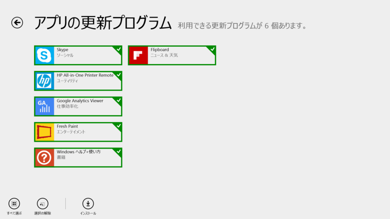
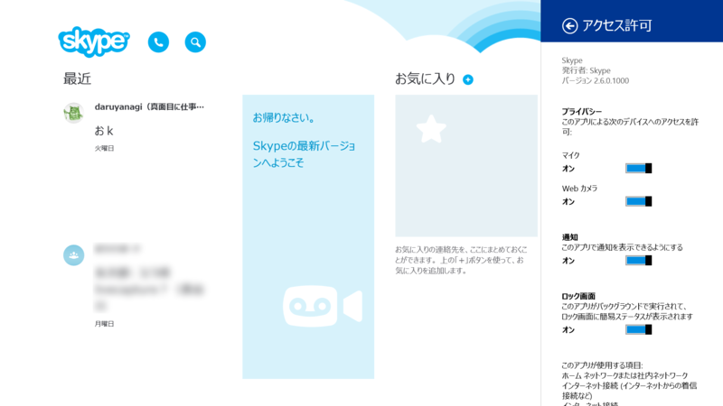
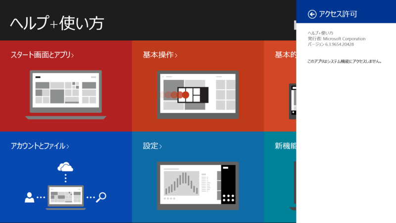

Skype 2.6.0.1000、Fresh Paint 2.0.14057.1、Windows ヘルプ+使い方 6.3.9654.20428、Flipboard 2.0.8.0
公開日：

Skype 2.6.0.1000

新機能：
- 別の場所で通話に応答した場合、Skypeの呼び出しは停止されます。
そりゃいい機能だ。
Windows ヘルプ+使い方 アプリ 6.3.9654.20428

6.3.9600.20274 からの小幅アップデート。ちょっと思ったんだけど、このバージョンナンバーって Windows 8.1 のバージョン（6.3.9600）と関係あるのだろうか。